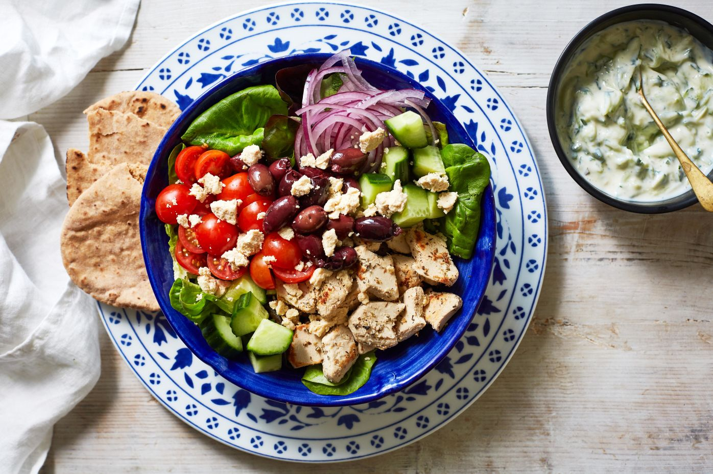

Chicken Gyros Bowl

This is a recipe on how to make chicken gyro bowls.
Ingredients
- 130g skinless chicken breast, cut into bite-sized pieces
- ½ tsp dried oregano
- salt and pepper
- ½ tsp olive oil
- 2 handfuls green salad leaves
- 65g cherry tomatoes, halved
- ½ small red onion, peeled and finely chopped
- ¼ cucumber, roughly chopped
- 20g pitted kalamata olives
- 20g feta, crumbled
- 1 tsp red wine vinegar
- 1 tsp extra virgin olive oil
- ½ wholewheat pitta bread
For the tzatziki
- ¼ cucumber, grated
- 1 garlic clove, peeled and crushed
- 100g yoghurt, such as greek, natural, soya
- 1 small bunch mint, leaves finely chopped
Cooking instructions
- Mix the chicken pieces together with the dried oregano and a little salt and pepper.
- Heat the oil in a non-stick frying pan and cook the chicken pieces for a few minutes until cooked through and starting to turn golden. Remove from the pan and set to one side.
- Mix together the ingredients for the tzatziki then set to one side.
- Add the salad leaves, tomatoes, onion, cucumber and olives together in a bowl and top with the feta, vinegar and extra virgin olive oil.
- Serve the gyros bowl with the chicken, tzatziki and pitta bread.
Back to recipe page